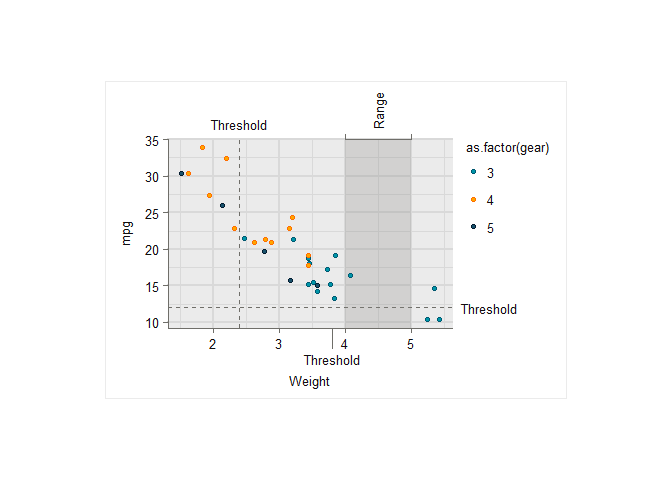

ggscribe provides annotation functions for ‘ggplot2’ that inherit style defaults from the globally set theme. This includes axis lines, axis ticks, axis text, panel grid lines, and shaded regions.
Installation
Install from CRAN, or the development version from GitHub.
install.packages("ggscribe")
pak::pak("davidhodge931/ggscribe")Example
library(ggplot2)
library(ggscribe)
set_theme(theme_classic())
ggplot(mpg, aes(displ, hwy)) +
geom_point(colour = "grey60", size = 1.5) +
coord_cartesian(clip = "off") +
# Axis lines — partial bottom axis up to displ = 6, full left axis
annotate_axis_line(position = "bottom", xmax = 6, element_to = "blank") +
annotate_axis_line(position = "left", element_to = "blank") +
# Axis ticks
annotate_axis_ticks(position = "bottom", x = c(2, 3, 4, 5, 6)) +
annotate_axis_ticks(position = "left", y = c(20, 30, 40)) +
# Axis text — native text blanked so custom labels are the sole source
annotate_axis_text(position = "bottom", x = c(2, 3, 4, 5, 6),
label = c("2L", "3L", "4L", "5L", "6L"),
element_to = "transparent") +
annotate_axis_text(position = "left", y = c(20, 30, 40),
element_to = "transparent") +
# Panel grid — horizontal lines at y breaks only
annotate_panel_grid(y = c(20, 30, 40), element_to = "transparent") +
# Panel shade — highlight the high efficiency region
annotate_panel_shade(ymin = 35, ymax = Inf, alpha = 0.15) +
# Label the shaded region — placed above and to the right of the panel
annotate_axis_text(x = I(1), y = I(1), label = "High efficiency",
hjust = 1, vjust = 1) +
# Curve from label down into the shaded region, avoiding the data
annotate_axis_line(x = 5.8, y = 43, xend = 4, yend = 37,
curvature = -0.2) +
labs(
x = "Engine displacement (L)",
y = "Highway fuel economy (mpg)"
)
#> Warning: The set theme does not define a `panel.grid` colour. Defaulting to
#> grey.
#> Warning: The set theme does not define a `panel.grid` linewidth. Defaulting to
#> `0.5`.